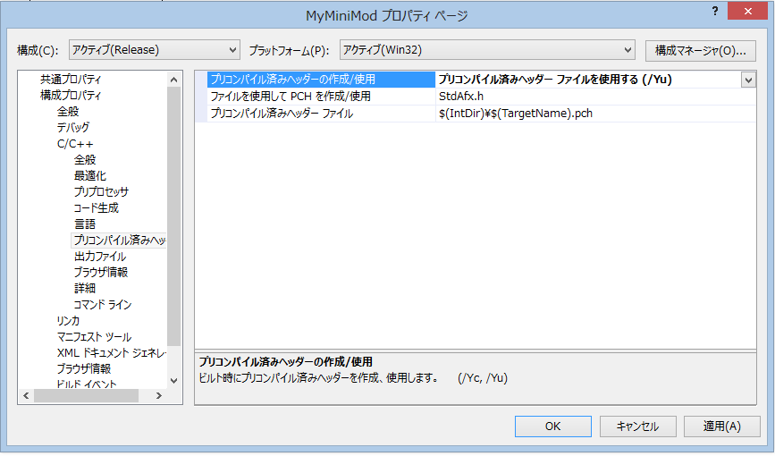
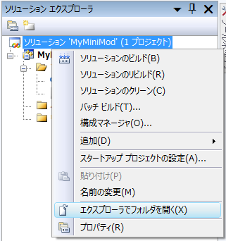

PluginMod用の「一般Mod」の作り方
-
さて、では、VC++のメニューより、｢新規作成｣=>｢プロジェクト｣を選択しましょう。
-
引き続いて、｢Win32｣=>｢Win32プロジェクト｣となります。
プロジェクト名に｢MyMiniMod｣と入力し、OKしましょう。
名前は多少なんでも良いのですが、一般Modとして認識させるためには、｢***Mod.dll｣という命名規則に従う必要があります。
-
｢次へ｣と続けて
-
｢DLL｣にのみチェックを入れ、他はチェックをはずします。｢完了｣を押しましょう。
-
そうすると、ソリューションエキスプローラーは下図のようなツリーとなります。
-
上図から不要なものをどんどんを削除します。
一番下から…
・ReadMe.txtで右クリックして削除(DELキーを押したあと、｢削除｣を選んでもよい)
・targetvar.hで右クリ削除
・stdafx.hで右クリ削除
・stdafx.cppで右クリ削除。
・MyMiniMod.cppで右クリ削除。
・以上で下図のように、｢dllmain.cpp｣だけくっついた状態となります。
-
さて、｢dllmain.cpp｣を選択し、ソースの下図の青色部分のように｢#include <windows.h>｣と書き換えましょう。
-
メニューのちょっと下あたりに｢Release｣もしくは｢Debug｣と見えている下図のようなところがあるはずです。
｢Release｣を一度選択しましょう。
-
シンプルなDLLにふさわしい設定にするために、プロジェクトの設定を変更する必要があります。
下図のようにソリューションエキスプローラの｢MyMiniMod｣を右クリックして、｢プロパティー」に入ります。
-
構成プロパティの｢全般｣の項目に｢文字セット｣という項目がありますので、｢Unicode文字セットを使用する｣というのを変えて、｢マルチバイト文字セットを使用する｣にしましょう。
天翔記では、元々がShiftJISですので、DLLをUnicode文字で管理するより、通常のマルチバイト文字セットの方が、はるかに扱いやすいためです。
↓ ↓
-
同様に、構成プロパティの｢C/C++｣の項目に｢ランタイムライブラリ｣という項目がありますので、｢マルチスレッド DLL(/MD)｣ではなく、｢マルチスレッド (/MT)｣へと変更します。。
これは、このDLL内に必要なものを内包するか、それとも、できるだけ外部のDLLに頼りサイズを減らすかの選択です。
両者はファイルサイズがかなり異なりまずが、どのみちファイルサイズは小さいため、
特に問題がなければ、 トラブル防止のため、｢マルチスレッド (/MT)｣を選択しておきましょう。
↓ ↓
-
次に、｢プリコンパイル済みヘッダー」という項目がありますので、｢プリコンパイル済みヘッダーを使用しない」を選んでください。
さきほど、
・stdafx.h や stdafx.cpp を削除してしまいました。
あれらがプリコンパイル済みヘッダーです。
理解の妨げになりますので、ここでは削除しました。よって使いません。

↓ ↓
-
｢適用｣=>｢OK｣を押して、全てを反映させましょう。
-
さて、それでは、dllmain.cpp を選択して、話を戻しましょう。
-
下図のように、５つの関数を追加しましょう。
下の５つの関数がPluginModからの自動呼出がサポートされる関数です。
｢自動呼出｣って何のこと？
と思うかもしれませんが、後で実行してみればわかりますので、
今は下図の通り入力してみましょう。
必ず｢WINAPI｣と付けておいて下さい。
// dllmain.cpp : DLL アプリケーションのエントリ ポイントを定義します。 #include <windows.h> BOOL APIENTRY DllMain( HMODULE hModule, DWORD ul_reason_for_call, LPVOID lpReserved ) { switch (ul_reason_for_call) { case DLL_PROCESS_ATTACH: case DLL_THREAD_ATTACH: case DLL_THREAD_DETACH: case DLL_PROCESS_DETACH: break; } return TRUE; } //-------------------------------------------------------- void WINAPI On_初期化(HANDLE 呼び出し元ハンドル) { MessageBox(NULL, "初期化", "初期化", NULL); } void WINAPI On_シナリオ大名選択直前() { MessageBox(NULL, "シナリオ大名選択", "シナリオ大名選択", NULL); } void WINAPI On_メインゲーム開始() { MessageBox(NULL, "メイン開始", "メイン開始", NULL); } void WINAPI On_相場変更直前() { MessageBox(NULL, "相場時", "相場時", NULL); } void WINAPI On_末期化() { MessageBox(NULL, "末期化", "末期化", NULL); } -
さて、以上でもソースはコンパイルできるのですが、
実は、このままでは、これら追加した５つの関数は、DLLの外のプログラムからはまったく見えないのです。
よって外から呼べません。･･･?しかも、実は、PluginModが呼び出す関数は、上のような日本語名ではなく、英語名です、その関数形式は上も含め、全部で以下の７つとなります。
void WINAPI OnInitialize(HANDLE hCallDLLHandle) 天翔記の初期化時に実行される。まだ天翔記ウィンドウも表示されてないような段階で実行される。
void WINAPI OnAfterChangeWindowSize() 天翔記で、どのウィンドウ解像度にするかを決めて、実際にそのウインドウ解像度になった直後に呼ばれる。
void WINAPI OnViewingTopMenu() 天翔記で、最初に表示される「新しくゲームを始める」「データをロードする」「ゲームを終了する」のメニューが表示された時呼ばれる。
void WINAPI OnSelectingScenarioDaimyoStart() 天翔記で、シナリオを決定した後に、大名の選択画面になったタイミングで呼ばれる。
void WINAPI OnMainGameStart() メイン画面でゲームがはじまった段階で呼ばれる。ロードした後もメイン画面が再描画された段階で呼ばれる。
void WINAPI OnSobaChange() 相場が切り替わるタイミング、切り替わる直前に呼ばれる。
void WINAPI OnFinalize() 天翔記が終了する直前に呼ばれる。
え？？
PluginModは英語名でdllの関数を呼び出すのに、dllmain.cppでは日本語で定義しちゃってるよ？
どうするの？･･･?とお思いでしょう。
-
両方の問題を一気に解決するのが、モジュール定義ファイル(.def)です。
それでは、さっそく作ってみましょう。
下図のように、ソースファイルといったあたりを｢右クリック」して、｢追加｣=>｢新しい項目｣と進みます。
- モジュール定義ファイル(.def)
コードの｢モジュール定義ファイル(.def)を選びましょう。
ファイル名は、｢dllmain.def｣とします。
下図の｢場所｣は無視してください。(変更しない。下図の通りに入力したりしないこと!!)
場所は自動で妥当なところが割り当てられますので、何も勝手に編集しないのが良いです。
-
以上で追加を押すと、追加されますが、下図のような、寂しい状態です。
-
さて、上の?、?の問題を解決すべく、下図のように書いてやりましょう。
あってるかどうか、コピペが可能なソース。
他の呼び出される関数を利用する際も同様となります。
LIBRARY "MyMiniMod" EXPORTS OnInitialize = On_初期化 @ 1 OnSelectingScenarioDaimyoStart = On_シナリオ大名選択直前 @ 2 OnMainGameStart = On_メインゲーム開始 @ 3 OnSobaChange = On_相場変更直前 @ 4 OnFinalize = On_末期化 @ 5
-
ここで、プロジェクトのプロパティにて、先ほど作った｢dllmain.def｣を定義ファイルとして指定しましょう。
-
さて、リビルドしてみましょう。
ソリューションを右クリックすれば、ソリューションのリビルドができます。

-
エラーが出ずに、無事にリビルドできたでしょうか？
エラーが出た場合は、ここまでのステップで何か間違っていますので見返しましょう。
-
それでは、出来上がったMyMiniMod.dllを｢天翔記フォルダ｣にコピーして下さい。
で、問題は、その肝心のMyMiniMod.dllはどこに出来上がったんだ？
ということなのですが、以下のようにソリューションから右クリックすれば、
｢エキスプローラでフォルダを開く
というのがあります。ここで開いて、｢Release｣の中をみてみましょう。

それを｢天翔記｣フォルダにコピーすれば、準備はととのいました。
-
天翔記を起動してみましょう!!。
何が起きたかわかりましたか？
天翔記のセーブやロードもしてみて、いつ、関数が呼び出されるのかを肌で確認してみましょう。
-
もしあなたが、｢初めてDLLを自分で一から作りました!!｣ということであれば、
あなたは今まさに、DLLの作り方を一通り習ったといえます。
おめでとう!!
ここで解説した内容こそ、DLLの作成方法の｢基本中の基本｣であり、｢王道中の王道｣なのです。
決してトリッキー方法ではなく、一般的な方法ですので、自信をもってOKです。
天翔記に限らず、あなたは一般的にいう、｢DLLの作成方法｣を習った、と言えるでしょう。
-
さて、最後にひとつ。 もし、２つの｢一般Mod｣があるとどうなるのでしょう。
先ほど天翔記フォルダにコピーした、｢MyMiniMod.dll｣をコピーして｢MyMaxMod.dll｣を作ってみましょう。
そして天翔記を実行します。
そうです、内容が同じModが２つとも実行されるため、ダイアログが２回ずつ出てくるが確認出来るはずです。
-
以上で、いちから作る｢一般MOD」を終了します。
お疲れ様でした。